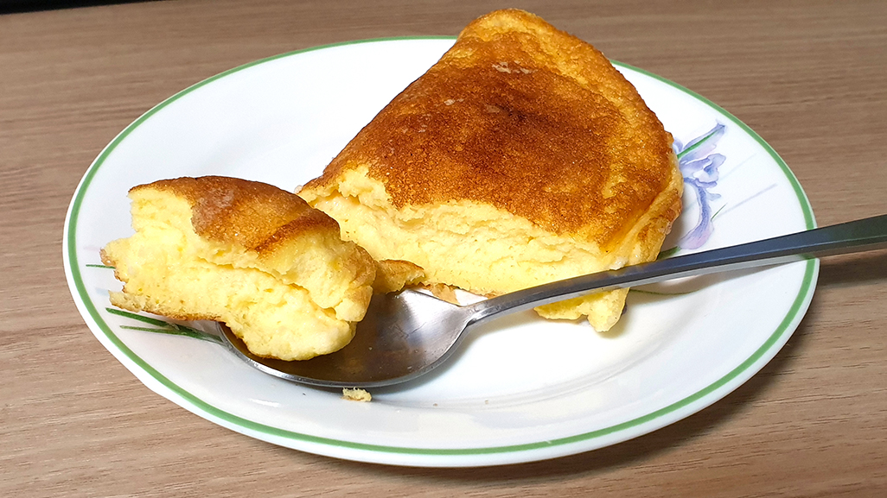

오랜 기간 제대로 된 외출을 못 해서인지 온라인 수업이라는 미묘한 느낌의 개강에 김이 식어버린 것인지 그냥 거하게 딴짓을 하고 싶단 생각이 들었다. 그렇게 아무 생각이나 하고 있는데 계시처럼 머릿속에 '크림스튜'라는 말이 들려왔다.
갑자기 뜬금없이 크림스튜? 그렇게 갑자기 크림스튜의 이미지가 머릿속에 떠돌아다녔다. 지브리 영화에서 볼 법한 나무그릇에 담은 따뜻한 스프라던가 따뜻한 가정의 상징으로 나오는 모습이라던가. 자주 해먹지 않아서 뭔가 묘한 환상이 있는 크림스튜지만 막상 만드는 방법은 간단하다는걸 알고 있었고 왠지모르게 만들고 싶은 마음이 폭발해서 마트로 달려가 재료를 구해 양도 계량도 대충대충인 크림스튜를 만들기로 했다. 그리고 여담으로 크림스튜의 모양새는 일본에서 만든 방식이라고 한다. 약간 충격이다..
크림스튜 안에 넣을 재료는 양도 재료도 취향껏 넣어도 된다! 나는 자취를 하고 있다 보니 다양하게 쓸 수 있는 양파, 당근, 감자만 넣었지만 브로콜리도 좋고 버섯이나 시금치, 콩, 마카로니도 어울린다. 기본적으로 재료는 전부 한입에 잘 들어가는 크기로 썬다. 자기 입 크기에 맞게 적당히 썰어보자.
다음은 고기류 손질이다. 고기도 소, 닭, 돼지 뭐든 자유지만 끓일 때 생으로 넣지 않고 익혀서 넣는다. 여기서 우리는 배탈이 나면 안되고 나름 비싼 메인 쟤료이니만큼 어떻게 손질해야 하는지 알고 가자.
다리살이든 가슴살이든 상관없지만 발골을 하고 싶지 않다면 정육으로 준비하자. 먼저 소금과 후추 1ts 정도로 밑간을 한 뒤 전분(없으면 생략 가능)을 넣고 섞어 준다. 프라이팬에 기름을 두른 뒤 중불에서 닭고기가 겉면만 노릇하게 익을 정도로 구워준다. 마무리로 청주를 넣어 잡내를 없애도 되지만 없으면 생략한다.
돼지고기의 경우는 마트에서 볼 수 있는 카레용 돼지고기가 가장 적합하다. 맛있기는 돼지고기 뒷다리살이 더 맛있을지도 모르지만! 닭고기와 똑같이 밑간을 하고 프라이팬에 볶아주는데 겉면이 완전히 익은 것처럼 보일 만큼 익혀주는게 좋다.
이렇게 비싼 친구를 구울 일이 있을까 싶지만 굳이 한다면 소고기도 카레용이 제일 좋다. 부위로 따지면 등심이나 안심! 미역국에 넣는 국거리도 괜찮다. 이쯤되면 다 똑같아 보이지만 위에 두 고기와 같이 밑간을 해 준뒤 프라이팬에 익혀준다. 소고기의 경우는 덜 익혀도 상관없다.
이제 스튜에 점성을 추가해줄 루를 만들어보자. 루는 버터와 밀가루를 볶아 만드는데 한 냄비 가득 만든다면 버터 70~80g, 밀가루 100g 정도를 볶아준다. 나같이 미각에 둔감한 사람은 부족하면 더 넣고 더 끓이면 그만이니 적당히 하면 된다. 루 사진을 검색하면 참 있어보이는 모양새가 나오던데 나처럼 나와도 스프가 되니 부담없이 대충하자!
덧붙여서 이 과정이 귀찮거나 버터가 너무 비싸서 부담된다면 즉석 크림스프 가루를 사서 넣어도 된다. 사실 이게 내가 직접 해먹는 것보다 맛있을지도 모른다….
밑준비가 끝났으면 식용유나 버터에 채소를 살짝 볶고 닭가슴살을 넣고 조금 더 볶아준다. 왠지 집어먹고 싶은 향이 나면 치킨 스톡을 푼 물 200mL, 우유 800mL를 넣어주는데 스프가루를 쓸 거면 치킨 스톡은 생략해도 된다. 그 뒤 루를 넣고 잘 저어서 10분 동안 핸드폰 보다 살짝살짝 저어주기만 하면 완성! 만드는 법이랄 것도 없이 너무너무 간단하다. 불만 약불로 해서 끓이는 걸 잊지 말자.
간이 안맞으면 소금을 넣어주고 양이 부족하면 우유를 넣어주고 점성이 부족하면 루를 더 만들어서 넣고 끓여주면 된다.
이런 야매 레시피보다 직접 영상으로 배우는게 더 빠르지 않을까ㅎㅎ... 그래서 준비했다. 나도 만들기 전에 살짝 참고한 제대로 된 레시피!
아무리 야매요리를 많이 만들어와도 만들고 나면 뭔가 불안한 법이다. 불안 반 기대 반으로 크림스튜를 먹어봤는데 정말 생각외로 맛있게 잘 나왔다! 달짝지근한 수프에 채소와 닭고기가 잘 어우러져서 정말 맛있었다. 빵 말고도 밥이랑 먹어도 정말 맛있다.
이렇게 만들어도 완성이 되니 누가 만들어도 맛있을 크림스튜! 하지만 한 끼 먹고 나서 남은 양을 보니 뭔 짓을 한 건가 싶기도 했다. 결국 남은 스튜는 친구에게 헬프콜을 해서 해치웠는데 맛있게 먹어줘서 다행이었다 :)
충동적으로 만든 스튜였지만 나름 성공적이었다. 하루종일 집중이 안되고 멍해져 있는 날, 스마트폰을 만지작거리거나 게임을 하는 것도 즐겁지만 몰두할 수 있는 평소에 안해볼 법한 요리를 해보는 것도 정말 나쁘지 않은 것 같다.
참고로 나는 그 사이에 또 충동적으로 수플레 오믈렛을 만들었는데... 아무리 그래도 충동적으로 머랭을 칠 생각은 하지말자.